COGA · curso 2
7. Otras Técnicas
7.1 Buffer de Profundidad
El algoritmo del pintor consiste en dibujar primero los objetos más lejanos de la escena según su coordenada
- Si dos objetos intersecan, no sabe determinas cual dibujar primero
- Se renderizan todos los puntos de los polígonos, incluso si estos estaŕan ocultos en la escena final.
El Z-Buffer almacena, para cada píxel de la pantalla, la profundidad(
La prueba de profundidad consiste en que, cuando se va a renderizar un objeto sobre un píxel en el que ya había otro, se compara su valor de profundidad (
- Si el nuevo está más cerca de la cámara (menor z), se dibujará y sustituirá al antiguo en el z-buffer.
- Si el nuevo está mas lejos de la cámara (mayor z) se descartará.
En principio, la prueba de profundidad se realiza después del fragment shader. Hoy en día la mayoria de GPUs admiten una prueba de profundidad temprana, realizando el test antes del fragment shader para incrementar la performance. Consiste en que, siempre esté claro que un fragmento no será visible (pues está detrás de otros) se descartará prematuramente.
El z-buffer almacena la profundidad de un rango normalizado entre 0 (más cercano) y 1 (más lejano) para que se compare rápidamente, mientras que en el view space la coordenada
En realidad, la precisión con la que se almacena la profundidad de los objetos no es uniforme en ese rango, los objetos lejanos se comprimen mas y los cercanos tienen más detalle, por lo que la relación entre la coordenada
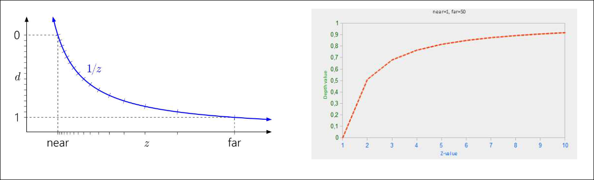
glENable(GL_DEPTH_TEST): activa la prueba de profundidad
glDisable(GL_DEPTH_TEST): desactiva la prueba de profundidad, por lo que dibuja según el orden en el que recibe los fragmentos, aunque estén detrás
glClear(GL_DEPTH_BUFFER_BIT): limpia el z-buffer
glDepthFunc(func): modifica los operadores de comparación usados en la prueba de profundidad.
Por defecto, se usa GL_ALWAYS, que implementa el algoritmo del pintor, pero se pueden usar:
GL_NEVER,GL_LESS,GL_EQUAL,GL_LEQUAL,GL_GREATER,GL_NOTEQUAL, oGL_ALWAYS.
7.1.1 Z-buffer 3.3
En opengl 3.3 se puede visualizar el z-buffer accediendo a gl_FragCoord.z en el fragment shader, por lo que se puede transformar fácilmente su valor 0-1.
void main(){
FragColor = vec4(vec3(gl_FragCoord.z), 1.0);
}
Como es de esperar, los valores obtenidos no son lineales, pero se pueden linealizar usando la ecuación antes planteada:
#version 330 core
out vec4 FragColor;
float near = 0.1;
float far = 10.0;
float no_lineal(float depth){
float z = depth*2.0-1.0;
return (2.0*near*far)/(far+near.z*(far-near))
}
void main(){
float depth = lineal (gl_FragCoord.z)/far;
FragColor ) vec4(vec3(depth),1.0);
}
7.1.2 Z-Fighting
El z-fighting es un artefacto visual en el que dos objetos tienen una profundidad tan similar que el z-buffer no tiene suficiente precisión para determinar cual está delante, por lo que ambas parecen cambiar continuamente de orden, causando efectos extraños. Como la precisión de la profundidad en zonas cercas a la cámara es mayor, es más común en objetos lejanos
Posibles soluciones:
- Aumentar la precisión del z-buffer si es posible
- Elegir bien el near y far
- Separar un poco los objetos
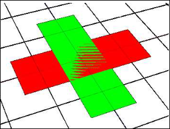
7.2 Atenuación
Atenuación: la intensidad de iluminación decrece a medida que aumenta la distancia a la fuente de luz.
donde
OpenGL establece por defecto void glLightf(GL_LIGHTX, GL_CONSTANT/LINEAR/CUADRATIC_ATTENUATION, valor)
Solo influye sobre las componentes ambiente y difusa de las luces. Además, puede afectar negativamente al rendimiento.
7.3 Niebla
La niebla es un efecto especial utilizado para difuminar los objetos según su distancia, haciendo que los más lejanos se mezclen con otro color y parezcan desvanecerse.
El efecto niebla se puede aplicar de dos formas:
- Basado en tablas (cálculo por píxel), más preciso
- Basado en vértices, más eficiente pero menos preciso.
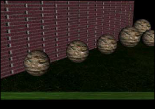
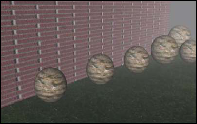
`glEnable(GL_FOG)`, activa la niebla.Para especificar la densidad, color y tipo de niebla:
glFogfv(parametro, valor) donde parametro puede ser:
GL_FOG_DENSITY,GL_FOG_START,GL_FOG_END,GL_FOG_INDEX,GL_FOG_COLOR
glFogi(GL_FOG_MODE, GL_LINEAR/EXP/EXP2)
GL_LINEAR->GL_EXP->GL_EXP2->
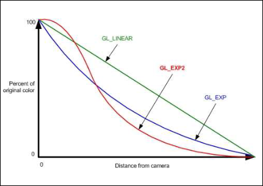
7.4 MipMapping
El mipmapping consiste en asociar varias texturas de distintas calidades a la misma superficie para mostrar una de ellas en función de su profundidad.
Para usarlo, se debe modificar la función de lectura de la textura.
glTexImage2D(GL_TEXTURE_2D, 0, GL_RGB, width, height, 0, GL_RGB, GL_UNSIGNED_BYTE, data);
gluBuild2DMipmaps(GL_TEXTURE_2D, GL_RGB, ancho, alto, GL_RGBA, GL_UNSIGNED_BYTE, ptr);
glTexParameteri(GL_TEXTURE_2D, GL_TEXTURE_MIN_FILTER, GL_LINEAR_MIPMAP_LINEAR);
glTexParameteri(GL_TEXTURE_2D, GL_TEXTURE_MAG_FILTER, GL_LINEAR);
// gluBuild2DMipmaps — builds a two-dimensional mipmap
GLint gluBuild2DMipmaps(GLenum target, GLint internalFormat, GLsizei width, GLsizei height, GLenum format, GLenum type, const void * data);
unsigned char *data = stbi_load(path, &width, &height, &nrComponents, 0);
if (data)
{
gluBuild2DMipmaps(GL_TEXTURE_2D, GL_RGB, width, height, GL_RGB, GL_UNSIGNED_BYTE, data); // con mipmap
glGenerateMipmap(GL_TEXTURE_2D);
}
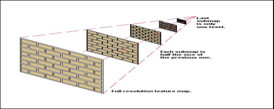
7.5 SkyBox
La skybox es una caja que contiene el escenario en su interior sobre cuyo interior se aplica una textura de cielo. También se puede usar una semicircunferencia o
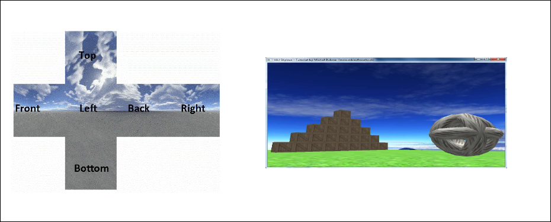
7.6 Colisiones
Teóricamente, para saber si dos objetos están colisionando se debe comprobar para cada una de las caras de ambos si se interseca con alguna de las del otro. Como esto es muy costoso, se suelen envolver los objetos en una forma geométrica más simple, como una caja , una esfera, un cilindro o un elipsoide.
7.6.1 Bounding Spheres
Las boundings spheres están definidas por un un centro (x,y,z) y un radio(float). Dos esferas colisionan si la distancia entre sus centros es menor que la suma de sus radios.
if(dist<(r1+r2)->colision)
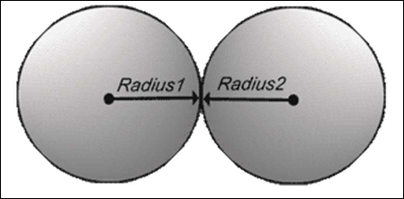
## 7.6.2 Bounding Boxes Las **bounding boxes** están definidas por un **punto mínimo** (xMIn, yMin, zMin) y un **punto máximo** (xMax, yMax, zMax)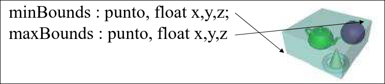
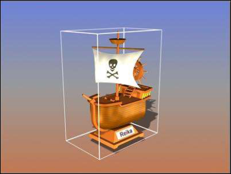
Hay dos manera de comprobar si las dos cajas colisionan: - **Axis Aligned Bounding Boxes (AAB):** se usan **cajas alineadas con los ejes**. Se basa en comprobar si **alguna de las 8 esquinas** de la caja está dentro de la caja de otro: ```c++ if( 𝐴𝑥𝑀𝑖𝑛 < 𝐵𝑥𝑀𝑎𝑥 && 𝐴𝑥𝑀𝑎𝑥 > 𝐵𝑥𝑀𝑖𝑛 && 𝐴𝑦𝑀𝑖𝑛 < 𝐵𝑦𝑀𝑎𝑥 && 𝐴𝑦𝑀𝑎𝑥 > 𝐵𝑦𝑀𝑖𝑛 && 𝐴𝑧𝑀𝑖𝑛 < 𝐵𝑧𝑀𝑎𝑥 && 𝐴𝑧𝑀𝑎𝑥 > 𝐵𝑧𝑀𝑎𝑥) → colisión ``` El método es más fácil, rápido y barato de calcular.- Separated Axis Test (SAT): se usan segmentos, triángulos y cajas no alineadas con los ejes.
- Dos objetos no colisionan si existe al menos un eje de proyección en el cual al proyectarlo no se superponen.
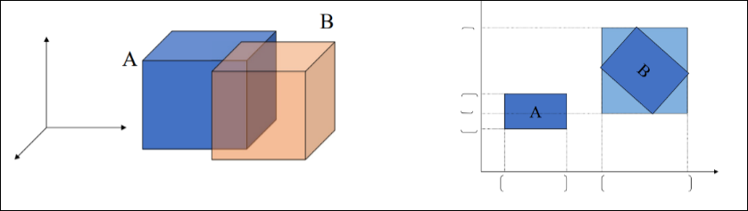
7.7 Árboles, particionado del espacio y mapas
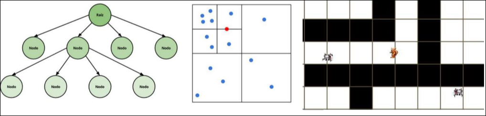